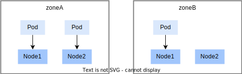

kube-scheduler
kube-scheduler 是 Kubernetes 集群的默认调度器，也是平台的默认调度器。
下面将介绍 kube-scheduler 的一些常见的特性。如果想要更全面地了解 kube-scheduler，请参阅官方文档 调度、抢占和驱逐。
指定调度偏好
在创建 Pod 时，用户可以主动设置一些调度偏好，从而影响调度行为，约束 Pod 只能运行在指定的节点上。下面是一些可以设置的调度偏好。
NodeSelector
nodeSelector 用于约束 Pod 只能运行在指定的节点上，用户通过设置 nodeSelector 来表明用户希望目标节点所具有的节点标签。Pod 只会被调度到拥有用户所指定的每个标签的节点上。
设置方式：通过 Pod 的 spec.nodeSelector 字段来设置 nodeSelector。字段类型是 map，定义了节点标签。
示例：当 Pod YAML 设置了下列 nodeSelector 时，节点需要同时有标签 kubernetes.io/os: linux 和 kubernetes.io/arch: amd64
spec:
nodeSelector:
kubernetes.io/os: linux
kubernetes.io/arch: amd64
亲和性
亲和性（affinity）用于影响 Pod 可以被调度到哪些节点上，亲和性分为两种类型：
- 节点亲和性：功能类似于 nodeSelector，但它的表达能力更强，并且允许用户指定软规则。
- Pod 间亲和性与反亲和性：使用户可以基于已经在节点上运行的 Pod 的标签来约束 Pod 可以调度到的节点，而不是基于节点上的标签。
节点亲和性
节点亲和性使用户可以基于节点标签来约束 Pod 可以调度到的节点。节点亲和性有两种类型：
- requiredDuringSchedulingIgnoredDuringExecution： 调度器只有在规则被满足的时候才能执行调度。此功能类似于 nodeSelector， 但其语法表达能力更强。
- preferredDuringSchedulingIgnoredDuringExecution： 调度器会尝试寻找满足对应规则的节点。如果找不到匹配的节点，调度器仍然会调度该 Pod。
设置方式：
- 通过 Pod 的
spec.affinity.nodeAffinity字段来设置节点亲和性。 - 字段 API 参考
示例：
spec:
affinity:
nodeAffinity:
requiredDuringSchedulingIgnoredDuringExecution:
nodeSelectorTerms:
- matchExpressions:
- key: topology.kubernetes.io/zone
operator: In
values:
- antarctica-east1
- antarctica-west1
preferredDuringSchedulingIgnoredDuringExecution:
- weight: 1
preference:
matchExpressions:
- key: node-role.kubernetes.io/compute
operator: Exists
Pod 设置的上述 affinity 表明：
- 可调度的节点上必须有标签
topology.kubernetes.io/zone:antarctica-east1或topology.kubernetes.io/zone:antarctica-west1 - 倾向于将 Pod 调度到含有标签键
node-role.kubernetes.io/compute的节点上
Pod 间亲和性与反亲和性
Pod 间亲和性与反亲和性使用户可以基于已经在节点上运行的 Pod 的标签来约束 Pod 可以调度到的节点，而不是基于节点上的标签。与节点亲和性类似，Pod 间亲和性与反亲和性也分为 requiredDuringSchedulingIgnoredDuringExecution 和 preferredDuringSchedulingIgnoredDuringExecution 两种类型。
Pod 间亲和性与反亲和性的规则格式为“如果 X 上已经运行了一个或多个满足规则 Y 的 Pod， 则这个 Pod 应该（或者在反亲和性的情况下不应该）运行在 X 上”。 这里的 X 可以是节点、机架、云提供商可用区或地理区域或类似的拓扑域， Y 则是 Kubernetes 尝试满足的规则。
- 拓扑域（X）：用户会通过 topologyKey 来表达拓扑域（X）的概念，其值是系统用来标示域的节点标签键。以 topologyKey
topology.kubernetes.io/zone为例，标签键topology.kubernetes.io/zone对应的值相同的节点会被认为是同一拓扑域。 - 规则（Y）：通过 Pod affinity 字段定义的标签筛选规则。
设置方式：
- 通过
spec.affinity.podAffinity字段来设置 Pod 间亲和性，通过spec.affinity.podAntiAffinity字段来设置 Pod 间反亲和性。 - 必须设置 topologyKey 字段，以表达拓扑域（X）
- 字段 API 参考
示例：
apiVersion: apps/v1
kind: Deployment
metadata:
name: application-server
...
spec:
template:
metadata:
labels:
app: database
spec:
affinity:
podAntiAffinity:
requiredDuringSchedulingIgnoredDuringExecution:
- labelSelector:
matchExpressions:
- key: app
operator: In
values:
- database
topologyKey: topology.kubernetes.io/zone
上述 Deployment 为他的 Pod 设置了:
- Pod 标签：
app: database - Pod 间亲和性：保证所有 Pod 可以运行在相同拓扑域（标签键是
topology.kubernetes.io/zone）的节点上。
nodeName
Pod 含有 spec.nodeName 字段，用于表明 Pod 运行在哪个节点上。在创建 Pod 时：
- 未设置 nodeName 字段：调度器会根据调度规则自动为 Pod 设置 nodeName。
- 设置了 nodeName 字段：Pod 会绕过调度器的调度规则，直接被分配到指定的节点上运行。
下面是设置 nodeName 的 Pod 示例：
apiVersion: v1
kind: Pod
metadata:
name: nginx
spec:
containers:
- name: nginx
image: nginx
nodeName: kube-01
上面的 Pod 只能运行在节点 kube-01 上。
污点与容忍度
污点（taint）是节点的一种属性，它可被用来使得某些类型的 Pod 不能被调度到该节点上（除非 Pod 明确说明其容忍该污点）。例如，当节点存在出现软硬件故障、网络不可用、磁盘空间不足等问题时，系统会自动为该节点添加一个污点。此外，当管理员发现节点存在问题或正在测试节点时，也可能为该节点添加污点。
容忍度（tolerations）是添加在一个 Pod 上的，如果 Pod 的容忍度与节点污点匹配，那么 Pod 可以被分配到含有污点的节点上。
节点污点示例
如果用户有查看节点的权限，用户可以使用 kubectl get node <nodeName> -o yaml 查看节点的污点。否则用户需要向管理员咨询节点的污点信息。
下面是一个示例，节点的 spec.taints 字段定义了污点信息：
spec:
taints:
- effect: NoSchedule
key: key1
value: value1
容忍度
创建 Pod 时，通过 spec.tolerations (API 参考) 字段来设置容忍度。
下面的容忍度设置可以忍受上述节点污点，从而 Pod 可以被调度到上述节点上：
tolerations:
- key: "key1"
operator: "Equal"
value: "value1"
effect: "NoSchedule"
Pod 拓扑分布约束
拓扑分布约束（topology spread constraints）用于控制 Pod 在集群内的拓扑分布，通过 Pod 的 spec.topologySpreadConstraints 字段进行设置。详情请见 Kubernetes 文档。
下面是一个帮助用户理解拓扑分布约束的基本示例：
集群状态如下
- 集群内有四个节点，通过节点标签
zone: <区域名>划分为两个区域 zoneA 和 zoneB。 - 含有标签
foo: bar的 3 个 Pod 分别运行在 node1、node2、node3 中。

用户若想创建一个新的 Pod，并且希望新来的 Pod 均匀分布在现有的可用区域，则可以按如下设置其清单：
kind: Pod
apiVersion: v1
metadata:
name: mypod
labels:
foo: bar
spec:
topologySpreadConstraints:
- maxSkew: 1
topologyKey: zone
whenUnsatisfiable: DoNotSchedule
labelSelector:
matchLabels:
foo: bar
containers:
- name: pause
image: registry.k8s.io/pause:3.1
spec.topologySpreadConstraints 下的子字段说明：
maxSkew：值是 1，表明不同节点区域之间 Pod 数量的最大差值为 1。topologyKey：用于划分节点区域的节点标签的键值。whenUnsatisfiable：值是 DoNotSchedule，表明调度器无法找到满足拓扑约束的方式时，将 Pod 保持在 pending 状态。labelSelector：表明含有标签foo: bar的 Pod 会被统计，以确定相应拓扑域中 Pod 的数量。
综上，zoneA 上有 2 个 Pod，zoneB 上有 1 个 Pod，如果 mypod 被分配到 zoneA 上会导致 skew 为 2，违背 maxSkew=1，所以 mypod 会被调度器分配到 zoneB 中的 Node3 或 Node4 上。
优先级和抢占
kube-scheduler 和 T9k Scheduler 都有各自的优先级和抢占机制，用户可根据需求选用。
kube-scheduler 的优先级和抢占机制请参阅 Pod 优先级和抢占。